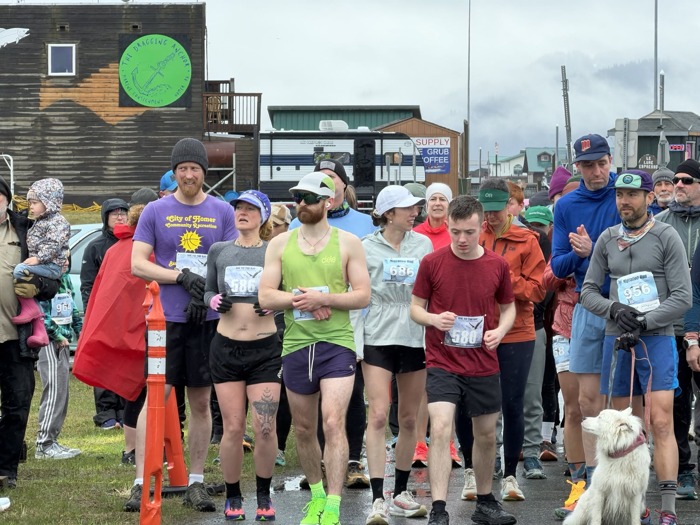

Race results
Search finishers, filter by race and relive the fast days. Sample results shown below; official timing archives update after each event.
| Place | Runner | Race | Div | Time |
|---|---|---|---|---|
| 1 | Emma Shealy | Spit Run 10K | F 20-29 | 38:14 |
| 2 | Daniel Kiesel | Spit Run 10K | M 30-39 | 38:52 |
| 3 | Maya Torsen | Spit Run 10K | F 30-39 | 40:07 |
| 4 | Robert Fields | Spit Run 10K | M 40-49 | 41:33 |
| 1 | Aaron Blackwell | Cosmic Half | M 30-39 | 1:24:46 |
| 2 | Sofia Reyes | Cosmic Half | F 20-29 | 1:27:19 |
| 3 | Liam Ostrander | Cosmic Half | M 40-49 | 1:29:58 |
| 4 | Nora Vance | Cosmic Half | F 40-49 | 1:33:12 |
| 1 | Chloe Kiesel | Migration 5K | F 15-19 | 19:41 |
| 2 | Abby Shealy | Migration 5K | F 15-19 | 20:03 |
| 3 | Claire Kiesel | Migration 5K | F 13-14 | 20:55 |
| 1 | Peter Nomura | Turkey Trot | Open | 18:47 |
| 2 | Grace Holloway | Turkey Trot | Open | 19:22 |
| 3 | Sam Whitfield | Turkey Trot | Open | 19:58 |
| No runners match your search. Try another name or race. | ||||
Looking for full historical results? Complete timing archives are available through our race timing partner.
Own the podium
Chasing a personal best?
Members get discounted entry to every timed race and access to weekly group runs to help you get there. Every finish also supports youth running in Homer.
0:14
Fastest 10K on record
0+
Turkey Trot finishers
0
Timed races a year
0.1
Longest club distance